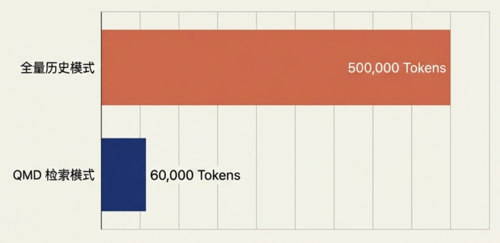
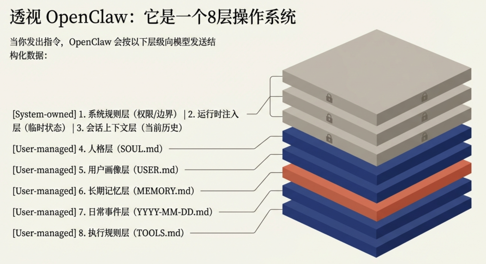
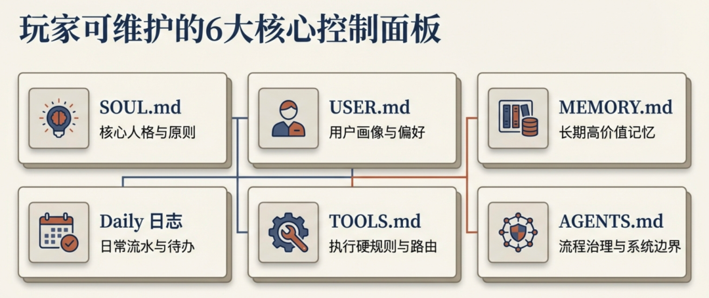
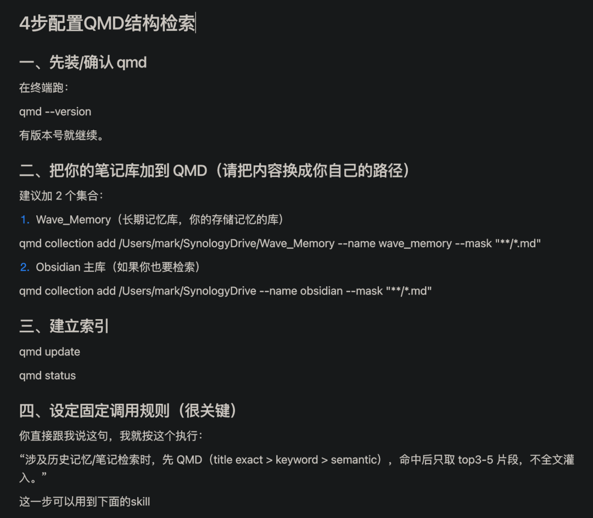
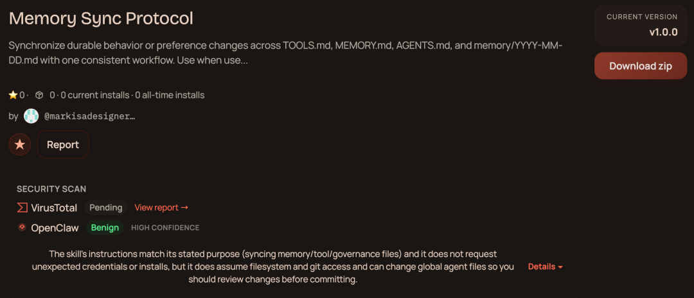
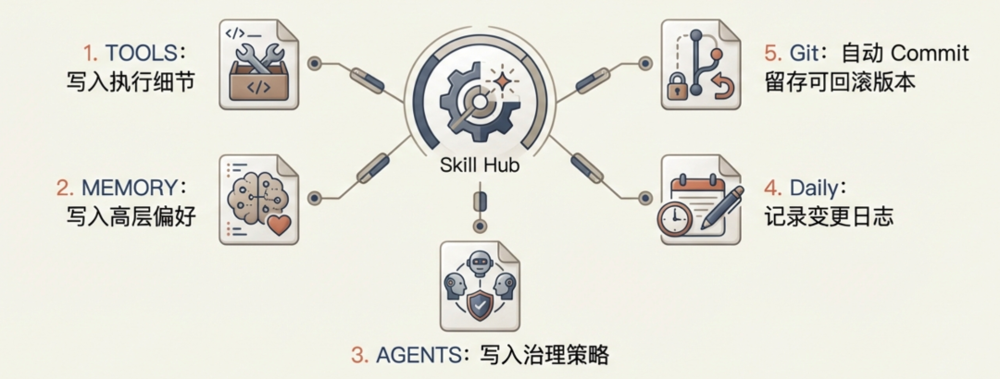
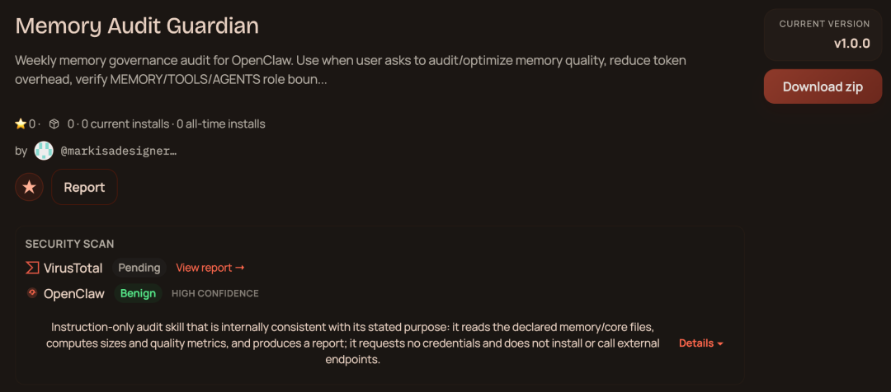

90%的玩家使用OpenClaw，都面临这样的问题：
龙虾还没赚钱，就先被Tokens烧到破产 开了月度订阅，一样用到平台限速 折腾memory半天，龙虾照样失忆 memory混乱，管理难度高 用了QMD检索系统，像没用一样，Tokens不降
被这些情况这么几次，谁还有心情去养龙虾？
很多人第一反应是：
模型不够强 上下文太小 工具不稳定
我花了三天时间把Openclaw与模型交互的机制做了全面拆解，终于发现了失忆，燃烧Tokens的罪魁祸首！
真正的问题，其实是 Memory 写错了。
这篇我给你一套“自动化运行”的Memory结构：不失忆、Token稳定、QMD真正省钱。
我的OpenClaw不再失忆，Tokens消耗暴降88%
先看结果：
假设你的项目对话历史累计 50,000 Token：
全量历史模式：每轮消耗 50,000，10 轮就是 500,000 QMD 检索模式：即时窗口 5,000 + 检索召回 1,000 = 每轮 6,000，10 轮只要 60,000
（召回Top3-5条片段，而不是把过去所有对话整段塞回去）
节省 88%，保守一点，我们按照节省 75%算，足足节省 4 倍。
你的对话越长，优势就越大，10 轮对话省 88%，100 轮对话省 95%+。全量模式到后面直接爆表，QMD 模式永远稳在 8-10k。 
（不同模型/配置会有浮动，但趋势是确定的：对话越长，QMD优势越大。）
第一部分：为什么 OpenClaw 会失忆、烧钱？
99%的人把memory用错了，所以OpenClaw失忆又烧钱！
常见误区
把所有内容堆到 MEMORY，臃肿且失忆
我最近把自己的 OpenClaw 运行机制拆解了一遍，核心结论是：
不要再把“人格、用户画像、技能目录、执行规则、日常流水”全堆在一个 MEMORY 文件里。
这样看起来像在“喂知识”，实际是在制造噪音。
第二部分：养龙虾的关键，就是养好配置文档
一、写对配置文件，模型才能不失忆
1、先纠偏：OpenClaw 不是“单记忆体”，而是分层系统
OpenClaw与模型交互机制更像一个8层操作系统，当你发出指令，OpenClaw会把以下结构发给模型：
系统规则层（System-owned）：工具权限、安全边界、调用规则、回复格式等 运行时注入层（System-owned）：当前任务目标、环境变量、运行状态（由系统临时注入） 会话上下文层（Thread history）：当前聊天与线程历史 人格层：SOUL.md 用户画像层：USER.md 长期记忆层：MEMORY.md（高价值、低噪音） 日常事件层：memory/YYYY-MM-DD.md 执行规则层：TOOLS.md（硬规则） 
你可维护的核心文件及写入什么内容（重点）
SOUL.md（人格原则） 写：风格、原则、边界、做事方式 不写：项目细节、临时任务、工具参数 USER.md（你的画像偏好） 写：你的长期目标、沟通偏好、写作规则 不写：每日流水、一次性事件 MEMORY.md（长期高价值记忆） 写：长期有效的偏好/决策/稳定规则（高价值、低噪音） 不写：技能目录、长日志、临时讨论 memory/YYYY-MM-DD.md（日常流水） 写：当天发生了什么、决定了什么、待办是什么 不怕脏，但要结构化（DECISION/PREF/TODO标签） TOOLS.md（执行硬规则） 写：执行硬规则（路径、默认profile、Skill路由触发规则等） 不写：价值观、长解释 AGENTS.md（流程治理与边界） 治理制度（如何维护记忆、何时确认风险动作等） 不写：重复的执行参数 
明白了模型交互的机制，就知道，模型第一时间去对应的文件中找相关的规则，而不是去MEMORY去找，如果你所有内容对在MEMORY，模型一定是失忆的！
那么新的问题来了，6个可维护的文件，日常记忆每天记录更新，文件慢慢越来越大，一样会燃烧大量Tokens。
第三部分：如何让Tokens消耗最小化？
如何兼具节省与体验的最大平衡？
Tokens消耗分三层
配置文件（当前优化的，包含记忆文件，是优化的重中之重） 对话（不要刻意管理压缩，但分主题拆分session，最大化上下文空间） 附件（不要刻意管理压缩，换取更高效的体验）
为了保证最好的体验，对话/附件，不要刻意管理压缩，用AI就是为了体验效率的畅快，这两部分需要消耗多少就消耗多少，换取更高效的体验。
配置文件最小化，是节省Tokens的第一要务
比如我的模型上下文272k，我优化后的配置文件控制在8-10k，占比约4%，剩下的空间就留给对话/附件，营造更好的对话体验。
为了更高效的利用上下文你要做到4件事情
控制配置文件大小8-10k（包含OpenClaw8层操作系统） 配置文件记录的内容，能短就短，能删则删 分主题拆分对话Session：主对话，系统运维、资产管理等等，分散高效利用上下文 引入QMD检索系统，分层级读取日常记忆/OBsidian笔记库，渐进式披露，提高Tokens效率
这个如果手动来管理的话非常费力，不可持续！
不用担心，我把这套管理沉淀成了skill，你一键安装就可以让OpenClaw自动学习使用。
（文件放在知识库，自行获取）
───
Memory + QMD正确结构，让记忆文件压缩更高效！
配置文件最大的文件应该就是记忆文件，所以我们需要引入QMD检索系统，来优化记忆文件的结构及读取方式。
用了QMD系统，照样会失忆/燃烧tokens？
有人反馈说，用了QMD系统，并没有节省Tokens！
我们来梳理一下：OpenClaw读取记忆系统的链路
核心记忆Memory.md(先读取，最重要的内容及第一级索引关键词) QMD索引系统（当Memory中关键词触发，模型读取QMD索引系统，继续触发第二级关键词） 日常记忆/笔记库等本地文档（读取日常记忆/笔记库中关键词片段，识别输出记忆）
OpenClaw先读取核心记忆（高价值低噪音），记忆中存放了QMD索引系统的入口，及核心关键词（20-40个）；关键词触发，模型读取QMD索引系统文档，读到关键词后，再做进一步文档的读取。
如果不想还没开始对话，就把上下文撑满，那你的核心记忆Memory文档中，必须保持一个严格的门槛标准。
Memory 必须保持高价值，低噪音！
设“入库标准”（只有满足才进 MEMORY）
一条信息必须同时满足至少 2 条才进核心记忆：
会影响未来决策（>2周） 会被重复使用（流程/偏好/规则） 会造成明显损失（忘了会踩坑） 可操作、可验证（不是情绪感受）
MEMORY 里只放 3 类 QMD 信息
索引入口（collection/path/mask） 检索协议（先精确标题→再关键词→再语义） 高价值锚点词（最多 20-40 个，不是全量词库）
不放：长关键词列表、全文摘要、历史流水。
推荐结构（可执行）
在 MEMORY 里加一个很短的段：
• QMD collection: 改成你自己的命名_memory
• source path: /Users/xxxx/改成你自己的命名_memory
• search priority: title exact > keyword > semantic
• hot anchors: LifeOS, MarkWave, Asset, OpenClaw, Skill Routing ...（控制上限）
然后把真正的关键词库放到独立文件（给 QMD 用，不进 MEMORY）：
• docs/qmd-keywords.md 或 QMD 内部索引元数据
QMD命中后，分层压缩注入
先返回候选（标题/路径/相关度） 只取 top-k（通常 3~5 条） 每条只取相关片段（例如 5~20 行） 再做一次摘要/去重后注入模型
OpenClaw不失忆、烧钱，必须让它搞定这些：
Memory解决去哪里找 QMD决定找到什么 模型负责读及表达
第四部分：一键配置全自动化维护系统
4步配置QMD系统，节省Tokens的关键

一键配置Memory规则Skill，省时省力
这么多配置文件，如果每次都手动一个个更新，违背了使用AI的效率初衷。 
我写了一个技能，Memory Sync Protocol
每次你要写入核心记忆，都会同步修改多个文件，减少文件手动配置复杂度。
当有新偏好/新规则时，统一执行：
TOOLS 写执行细节 MEMORY 写高层偏好 AGENTS 写治理策略（必要时） daily memory 记变更日志 git commit 留可回滚版本 
一键配置自动化审核机制，减少人工管理难度
我同步做了自动化自审查机制，如果遇到问题会及时报错提醒你！ 
这个审核技能帮你做两件重要事情！
1、审核Memory的写入原则（统一标准）
单一职责：每个文件只做一件事（各司其职） 最小必要：能短就短，能删就删 可执行：写“规则句”，不写空洞描述 可验证：重要规则要能被检查（路径/命令/触发词） 可过期：每条关键规则最好有失效条件或复审周期
2、周期自动化审核
发给模型的多层核心文件大小控制在8-10k Memory索引关键词20-40个 Memory提及阈值：>3KB 就提醒清理 每周汇报总结更新，交给你决策哪些更新哪些删除（新增3个有效词，就删掉3个低命中词） 命中统计：按最近一周query结果更新锚点次（数据驱动）遵循以上条件，每周发送周报，当出现数据超出，第一时间报告反馈。
知识库下载skill文件，直接发给你的Openclaw让它安装即可，这比“靠聊天让OpenClaw帮你记住”靠谱太多。
Skill文档放在知识库，欢迎自行领取！
这次改造进化带来3个提升
memory规则更加清晰，我仍然仅用一句话，让Openclaw记忆某件事情 记忆文件/OBsidian笔记库索引结构更清晰，模型渐进式读取，大大节省Tokens 按照OpenClaw机制来更新优化的配置文件，模型读取更精准，Openclaw不再失忆
这意味着：更懂你 + 更稳执行 + 更省 token。 的龙虾已经成型
你不需要“更聪明的模型”，你需要的是：
更清晰的记忆结构与执行纪律。
当这套系统跑起来后，OpenClaw 才会从“聊天助手”变成“长期队友”。
你的 MEMORY 是哪种结构？
A. 所有内容都堆在一个文件，我用AI就是为了方便，模型读不到说明模型应该再进化！
B. 分了几个文件但比较乱，每次手动维护简直是噩梦！
C. 已经做了QMD索引，但是Tokens没有明显降低，难道是我姿势不对？
D. 还没开始整理，这篇直接喂给OpenClaw让它自动学习整理！
留言告诉我你的结构。
下一篇我们来聊聊OpenClaw的自动化神器有什么让你哇塞的玩法，欢迎关注更新！